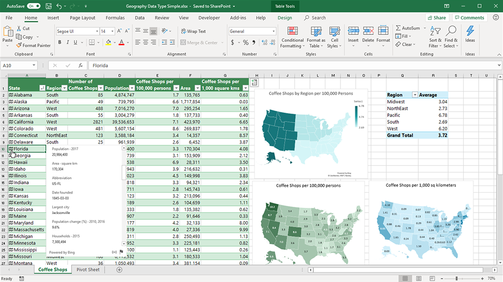
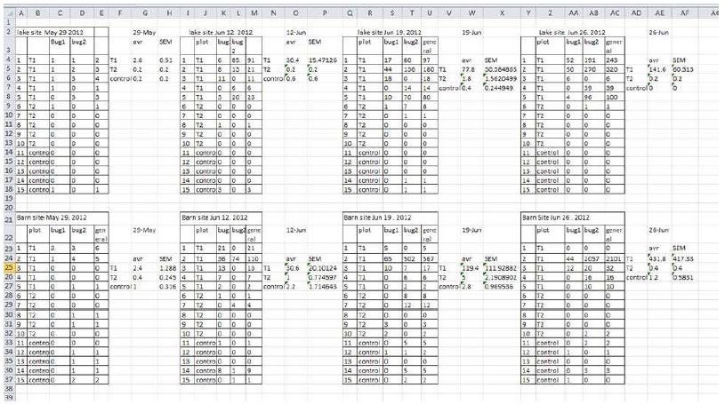
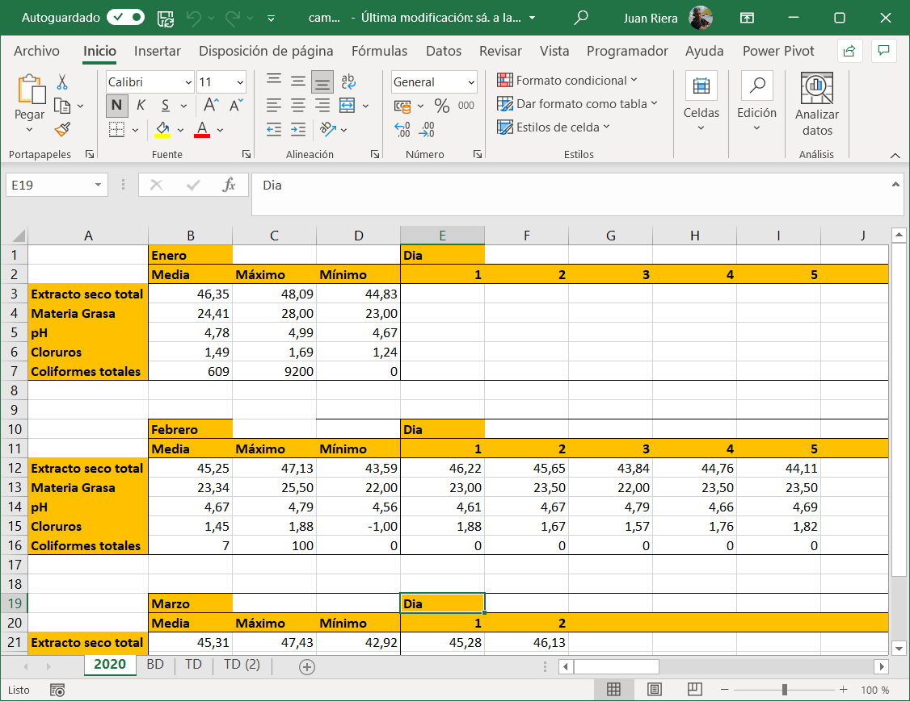
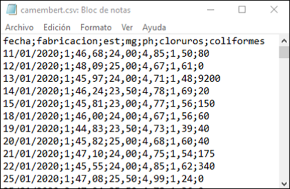

3 Herramientas para el análisis: La hoja de cálculo.
La hoja de cálculo es una herramienta omnipresente hoy día en todos los ámbitos de trabajo y educativos. Desde la aparición de Visicalc, en 1978, ha contribuido a la gestión de miles de empresas, se ha utilizado de manera general en análisis de datos y sus gráficos se han utilizado y se utilizan en publicaciones e informes de todas clases. En la década de los años 80 del pasado siglo, la hoja de cálculo Lotus 1-2-3 fue la aplicación más utilizada en los ordenadores IBM-PC y compatibles, y consiguió facturaciones millonarias para la empresa matriz. Lotus 1-2-3 dominó el mercado hasta la aparición de Microsoft Windows a finales de los años 80; el nuevo sistema operativo favoreció la implantación de Excel, que desde entonces se convirtió en la hoja de cálculo dominante.



3.1 Usos de la hoja de cálculo:
Introducción, edición y almacenamiento datos. FIltrado y corrección de errores.
Manipulación básica mediante tablas dinámicas
Preparación y edición de gráficos, incluyendo gráficos dinámicos. Mejores prácticas.
Presentación de datos, apoyados en herramientas adicionales como Microsoft PowerPoint. Mejores prácticas.
3.2 Almacenar datos en una hoja de cálculo
Las hojas de cálculo son muy útiles para recoger la información de un conjunto de observaciones.
Los datos se pueden recoger y guardar de múltiples formas. Cuando la recogida de datos se hace de forma manual en papel, es necesario registrar en el ordenador los datos recogidos. Lo más frecuente es que este registro se haga en hojas de cálculo, como Microsoft Excel o Google Sheets. En algunos casos, el almacenamiento se hace sobre bases de datos, genéricas o desarrolladas a medida.
Actualmente, la tendencia es recoger los datos o bien de forma automática, o bien de forma manual sobre sistemas informatizados (pantallas), lo que permite eliminar el papel y disponer directamente de los datos en un formato digitalizado.
Los equipos y líneas de producción diseñados actualmente (IoT) se interconectan con los sistemas de información y almacenan en tiempo real todos los datos necesarios, lo que libera al operario de la pesada tarea de reintroducirlos manualmente, a la vez que reduce los errores debidos a la imputación incorrecta.
En todos los casos, es imprescindible asegurar que los sistemas de información pueden exportar a ficheros de texto tipo fichero plano o tipo CSV, de forma que podamos importarlos tanto a Excel como a R, como veremos más adelante. Estos sistemas de exportación de datos deben diseñarse de forma flexible y abierta, para que tanto la captura como la exportación puedan modificarse y adaptar la recogida de la información a las necesidades de cada momento.
En este libro trataremos exclusivamente de lo que llamaremos datos rectangulares: grupos de valores que están asociados a una o más variables, y a varias observaciones. Hay muchos más datos que no se ajustan a esta organziación: imágenes, sonidos, archivos documentales de texto. Pero la forma más común de almacenar datos industriales es la de las tablas rectangulares, organizadas según el principio de los datos arreglados.
3.3 Datos rectangulares en Excel
La estructura de datos ordenados nos lleva a almacenar nuestros datos en tablas con estructura rectangular. La mejor forma de manejar los datos en Excel es convertir esta estructura en una tabla, para ello utilizaremos la opción Menú> Insertar>Tabla

Aunque en Excel no es fácil modificar esta estructura, veremos que R proporciona herramientas muy útiles que permiten intercambiar filas o columnas, lo que nos ayuda en el análisis. Hadley Wickham (2017) proporciona métodos detallados para manejar tablas de datos ordenados.
3.3.1 Errores en el diseño de la captura de información
Cuando nos incorporamos a un equipo de trabajo existente, lo más seguro es que el equipo disponga ya de un sistema de archivo de los datos, de acuerdo con sus prácticas habituales. A veces el diseño de la captura de datos sigue aproximadamente el modelo manual en papel. Se introducen los datos en la hoja de cálculo y una vez completados, se imprime el documento para su archivo.
El error más común que cometemos es tratar la hoja de cálculo como un bloc de notas, es decir, hacer anotaciones de forma libre, colocar los datos y el resultado de los análisis al lado y en cualquier parte de la hoja, y apoyarnos en el contexto para interpretar lo que hemos guardado. Pero para que el ordenador sea capaz de analizar nuestros datos de manera eficiente, debemos estructurarlos de tal forma que el programa use la información tal como nosotros queremos.
Es común utilizar una hoja para guardar múltiples tablas de datos, tal como vemos en la Figura 3.1. Esta estructura, sin embargo, resulta enormemente confusa para su análisis, o lo imposibilita completamente.

En otros casos, los datos se guardan en hojas de cálculo que se componen de diferentes pestañas para cada semana, cada mes o cada año, como vemos en la Figura 3.2. Sin embargo, esta forma de almacenar los datos tampoco es la óptima para su análisis.

¿Y utilizar diferentes pestañas para cada tabla? En este caso, la respuesta es sí y no. Si las diferentes tablas presentan situaciones diferentes, o datos que no son coincidentes, podemos utilizar diferentes pestañas. Pero si los datos están vinculados, por ejemplo, se corresponden con medidas hechas en fechas diferentes (meses, años), la respuesta adecuada es que las pestañas no son la forma correcta de almacenarlos datos; la forma recomendad es añadir una variable que nos permita diferenciar los datos por fecha; nuestro programa de análisis nos permitirá filtrar los datos según la fecha que deseemos, y todos estarán en una única tabla, facilitando la coherencia del conjunto.
Hay muchas formas de almacenar la información en una hoja de cálculo, pero sólo la estructura de datos ordenados o arreglados facilita la utilización de los datos tanto por la hoja de cálculo como por otros programas de análisis.
3.4 De Excel a R
Una vez que tenemos nuestros datos en Excel, hay dos formas en las que podemos poner los datos a disposición de R para su análisis: exportarlos a un archivo de texto con formato CSV, o leer directamente los datos de Excel desde R utilizando las funciones de la librería tidyverse. En ambos casos, el resultado en R es un dataframe o cuadro de datos, que es una estructura equivalente a la de nuestra tabla de datos en Excel.
3.4.1 Qué es un fichero plano y un fichero CSV
Se suele llamar fichero plano a un fichero de datos de texto sin ningún tipo de formato, donde los datos están separados por espacios o tabulaciones. Muchos equipos automáticos, como balanzas de laboratorio o básculas de proceso, producen ficheros planos de texto, que se pueden importar a Excel o R. Un fichero CSV es un fichero plano en el que los valores están separados por un carácter especial, llamado separador. Este separador puede ser una coma , (cuando los decimales se separan mediante un punto, como en EEUU) o un punto y coma ; (cuando los decimales se separan mediante una coma, como en España)



En un fichero plano o en un fichero CSV, la primera fila puede contener los nombres de las columnas. En algunos casos, los elementos de texto pueden estar entre comillas. En estos casos, los programas de importación se ocupan de la conversión de formatos.
La importación de un fichero CSV en Excel en español es directa si se ha generado con puntos y comas como separador y comas para los decimales; si no es así, nos aparecerá como un fichero plano de texto sin formato, y tendremos que realizar una conversión.